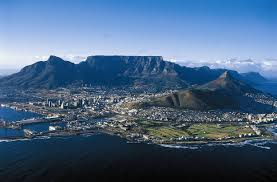

This webpage is about my favorite places all around the world.Some of them are places I would love to visit in the future:
This is a flat-topped mountain overlooking the city of Cape Town.It is a prominent landmark and a huge tourist attraction.Many tourists use the cableway or hike to the top.
Lake Bogoria is a saline,alkaline lake that lies a little north of the Equator.Hot sorings and pink flamingos can be found in the lake.The hot springs are believed to be able to heal diseases.
This is waterfall is also known as Mosi-oa-tunya and is found on the Zambezi River at the border of Zambia and Zimbabwe.It is one of the Seven Natural Wonders of the world.
That is a list of my favorite places as visited by me.I am deeply interested in tourist attractions located in Africa as our motherland is rich with life and culture.